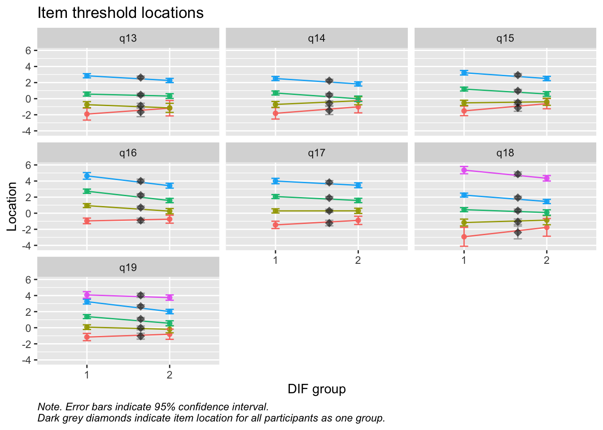
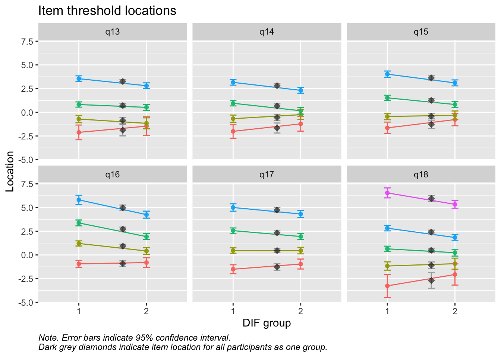
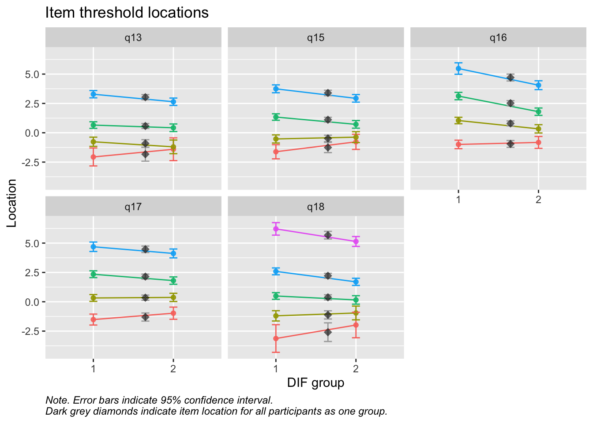

### Tar bort observationer som inte är tjej eller killedf<-df%>%filter(!grepl("annan könsidentitet|vill inte svara", tolower(q3)))df<-df%>%filter(!is.na(q3))### Byter namn på demografiska variablercount(df, q3)
# A tibble: 2 × 2
q3 n
<chr> <int>
1 Kille 671
2 Tjej 719
Code
count(df, q1)
# A tibble: 2 × 2
q1 n
<chr> <int>
1 År 2 på gymnasiet 744
2 Årskurs 9 i grundskolan 646
Code
count(df, q6)
# A tibble: 5 × 2
q6 n
<chr> <int>
1 Annat boende 19
2 Bostadsrätt 333
3 Hyreslägenhet 266
4 Villa/parhus/radhus 767
5 <NA> 5
# A tibble: 2 × 2
Kön n
<chr> <int>
1 Kille 671
2 Tjej 719
Code
count(df, q7, q8, q9)
# A tibble: 53 × 4
q7 q8 q9 n
<chr> <chr> <chr> <int>
1 I Sverige I Sverige I Sverige 863
2 I Sverige I Sverige I ett land i övriga Europa 37
3 I Sverige I Sverige I ett land i övriga Norden 16
4 I Sverige I Sverige I ett land i övriga världen 77
5 I Sverige I Sverige <NA> 1
6 I Sverige I ett land i övriga Europa I Sverige 29
7 I Sverige I ett land i övriga Europa I ett land i övriga Europa 28
8 I Sverige I ett land i övriga Europa I ett land i övriga världen 6
9 I Sverige I ett land i övriga Norden I Sverige 13
10 I Sverige I ett land i övriga Norden I ett land i övriga Europa 3
# ℹ 43 more rows
Code
### Koda om kön till numerisk + rätt etiketterd$Kön<-recode(d$Kön,"'Tjej'=1;'Kille'=2",as.factor=FALSE)d$Kön<-labelled(d$Kön, labels =c("Tjej"=1, "Kille"=2))d$Årskurs<-recode(d$Årskurs,"'Årskurs 9 i grundskolan'=1;'År 2 på gymnasiet'=2",as.factor=FALSE)d$Årskurs<-labelled(d$Årskurs, labels =c("årskurs 9"=1, "år 2"=2))
2.2 Välbefinnande
Code
count(df, q13, q20)
# A tibble: 29 × 3
q13 q20 n
<chr> <chr> <int>
1 Aldrig Lika bra 1
2 Aldrig Lite bättre 2
3 Aldrig Lite sämre 5
4 Aldrig Mycket bättre 5
5 Aldrig Mycket sämre 8
6 Ganska ofta Lika bra 203
7 Ganska ofta Lite bättre 161
8 Ganska ofta Lite sämre 66
9 Ganska ofta Mycket bättre 114
10 Ganska ofta Mycket sämre 12
# ℹ 19 more rows
Sektionen i PDF/pappers-enkäten inleds med meningen: “NÅGRA FRÅGOR OM HUR DU MÅR”.
Code
# Skapa dataframe för välbefinnande utan NA:sd_v<-d%>%select(Kön, Årskurs, Bostad, any_of(välbefinnande))%>%na.omit()# Skapa DIF dfd_dif_v<-d_v%>%select(Kön, Årskurs, Bostad)%>%mutate(across(everything(), ~factor(.x)))# remove non-itemsd_v<-d_v%>%select(!c(Kön,Årskurs,Bostad))
Values highlighted in red are above the chosen cutoff 0.5 logits. Background color brown and blue indicate the lowest and highest values among the DIF groups.
Values highlighted in red are above the chosen cutoff 0.5 logits. Background color brown and blue indicate the lowest and highest values among the DIF groups.
Enligt Mokken passar q20 “Om du jämför dig med andra i din ålder…” inte in bland övriga
q20 är även starkt underfit samt q19 “Hur ofta är du nöjd med hur du ser ut?”
PCA 1.96
Lokalt beroende mellan q13 “lycka och glädje” och q14 “intresse för livet” samt q13 och q15 “nöjd med livet som det är nu
Targeting ganska bra, inte så mycket takeffekter, q18 “Hur ofta tycker du att livet är härligt” verkar täcka upp längst spann
Inga oordnade svarskategorier
Svarskategorierna täcker upp mycket bra
Positivt att svarskategorierna verkar fungera bra för alla items. Nu testar vi och ser om vissa av frågorna kan fungera som ett välbefinnandekonstrukt. Tar därmed bort q20 som inte verka passa in. Troligtvis ryker även q19.
Values highlighted in red are above the chosen cutoff 0.5 logits. Background color brown and blue indicate the lowest and highest values among the DIF groups.
Code
RIdifThreshFigLR(d_v, d_dif_v$Kön)

Code
RIpartgamDIF(d_v, d_dif_v$Årskurs)
[1] "No statistically significant DIF found."
Code
RIdifTableLR(d_v, d_dif_v$Årskurs)
Item locations
Standard errors
Item
1
2
MaxDiff
All
SE_1
SE_2
SE_All
q13
0.146
0.105
0.041
0.145
0.229
0.246
0.161
q14
0.202
0.105
0.097
0.162
0.211
0.226
0.151
q15
0.517
0.614
0.097
0.570
0.197
0.197
0.136
q16
1.323
1.707
0.384
1.506
0.167
0.161
0.115
q17
1.121
1.288
0.167
1.197
0.172
0.173
0.121
q18
0.574
0.906
0.332
0.731
0.266
0.249
0.182
q19
1.308
1.381
0.073
1.339
0.182
0.180
0.128
Note:
Values highlighted in red are above the chosen cutoff 0.5 logits. Background color brown and blue indicate the lowest and highest values among the DIF groups.
Values highlighted in red are above the chosen cutoff 0.5 logits. Background color brown and blue indicate the lowest and highest values among the DIF groups.
Code
RIdifThreshFigLR(d_v, d_dif_v$Kön)

Code
RIpartgamDIF(d_v, d_dif_v$Årskurs)
[1] "No statistically significant DIF found."
Code
RIdifTableLR(d_v, d_dif_v$Årskurs)
Item locations
Standard errors
Item
1
2
MaxDiff
All
SE_1
SE_2
SE_All
q13
0.314
0.264
0.05
0.306
0.247
0.256
0.172
q14
0.386
0.244
0.142
0.321
0.227
0.236
0.161
q15
0.764
0.836
0.072
0.804
0.212
0.209
0.146
q16
1.756
2.115
0.359
1.931
0.186
0.178
0.128
q17
1.508
1.632
0.124
1.564
0.190
0.188
0.133
q18
0.857
1.195
0.338
1.016
0.284
0.263
0.195
Note:
Values highlighted in red are above the chosen cutoff 0.5 logits. Background color brown and blue indicate the lowest and highest values among the DIF groups.
MJ: 16 är mest underfit, jag testade ta bort den och sedan även 17 pga underfit (när 16 tagits bort). Såg ut att fungera bra med uppsättningen “q13” “q14” “q15” “q18”, även om det finns en reskorr mellan 13 och 14 som ligger på gränsen.
itemnr item 1 q13 lycka och glädje? 2 q14 ett intresse för livet? 3 q15 dig nöjd med livet som det är just nu? 4 q18 Hur ofta tycker du att livet är härligt?
Om du tar bort 14 istf 16 så blir 16 underfit i nästa steg, och tar du bort 16 blir 17 underfit. Så jag tänker att vi bör behålla 14.
Values highlighted in red are above the chosen cutoff 0.5 logits. Background color brown and blue indicate the lowest and highest values among the DIF groups.
Code
RIdifThreshFigLR(d_v, d_dif_v$Kön)

Code
RIpartgamDIF(d_v, d_dif_v$Årskurs)
[1] "No statistically significant DIF found."
Code
RIdifTableLR(d_v, d_dif_v$Årskurs)
Item locations
Standard errors
Item
1
2
MaxDiff
All
SE_1
SE_2
SE_All
q13
0.244
0.152
0.092
0.217
0.246
0.258
0.172
q15
0.659
0.712
0.053
0.691
0.213
0.211
0.147
q16
1.586
1.959
0.373
1.768
0.187
0.181
0.129
q17
1.354
1.486
0.132
1.416
0.191
0.191
0.134
q18
0.772
1.066
0.294
0.912
0.281
0.265
0.194
Note:
Values highlighted in red are above the chosen cutoff 0.5 logits. Background color brown and blue indicate the lowest and highest values among the DIF groups.